第二届全智会争雄简析
#1 第二届全智会争雄简析 作者：蓝天蓝 发表时间：2011-11-12 8:06:12
第二届全智会争雄简析
原文网址链接：http://www.rifchina.com/Article/ShowArticle.asp?ArticleID=6525
第二届全国智力运动会7日就要在武汉开枰，这也许是最后一届(“路透社”消息），赛场上争夺将更加“惨烈”。虽然现在还不知五子棋参赛棋手的最后名单，但可以通过两次名单确认上看出一二。
男子方面贺启发最近全国锦标赛仅取得第16的成绩来看，卫冕难度加大。前世界冠军吴镝再全国锦标赛上重返亚军，为争夺自己第一个全国冠军，必将发力，使之成为夺冠热门。两届全国公开赛冠军戴晓涵只要全神贯注，夺冠也有可能。全锦赛新科冠军陈靖，“乘胜追击”也不意外。两届全锦赛冠军艾显平，也属夺冠阵营。世团赛、世锦赛、第一届全锦赛冠军曹冬，刚进行的全锦赛上只取得了第21名，争冠难度相当大。
女子方面，上届冠军汪清清虽然在全锦赛上意外丢冠，卫冕还是有可能的。对汪清清卫冕最大的威胁应是来自辽宁的于亚君，虽然最好成绩首届全锦赛女子第4名，但男子的棋风，再加上辽宁的高奖金，这次成绩会有所突破的。09全锦赛女子冠军霍九旭闭门修练一年也将是夺冠的热门。今年全锦赛冠军黄琼莹，保持状态取得第一只不过是有一定难度而已。上届亚军、今年全锦赛第三名胡夕由于棋风较为保守，再加上学业过重，在夺冠的阵营中夺冠概率最小。
团体方面，男子由于贺启发加入上海，使广东卫冕几乎不可能。由于上海棋手的实力较为平均，憋足劲，“血耻”上届因为甲流，远离的团体冠军，夺冠可能性极大。湖北由于陈靖的加盟，使湖北队中有三人头顶全锦赛冠军头衔，可谓豪华之队，再加上东道主，夺冠也是情理之中的。上届亚军北京队，曹冬携两老将陈伟、张进宇，在夺冠阵营中，要超水平发挥才有可能。这次夺冠热门的还有全新组合，吴镝领衔的辽宁队，俗话说重奖之下必有勇夫，据说辽宁奖金不少，那辽宁夺冠概率大增。另外戴晓涵加入四川，使四川也加入了争冠的阵营。
女子团体，是这届智运会新增的。从阵容上来说湖北最强，四川、辽宁、上海、北京都属于夺冠阵营。
这正是：
五侠雄聚楚地，星月点兵勇者胜。
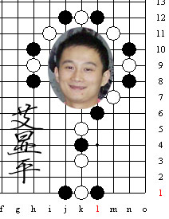
09、10全锦赛冠军
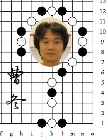
07年全锦赛冠军
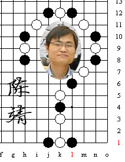
11年全锦赛冠军
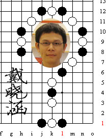
10、11全国公开赛冠军
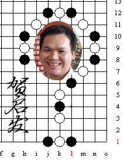
第一届智运会冠军
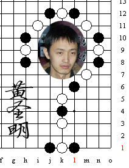
08年全锦赛亚军
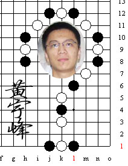
07年全锦赛第三名
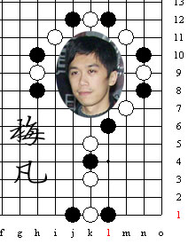
08年全锦赛冠军
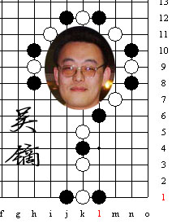
11年全锦赛亚军
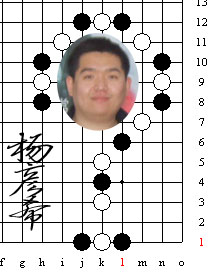
10年全锦赛亚军
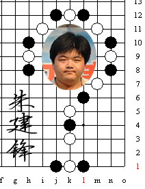
06年全国邀请赛冠军
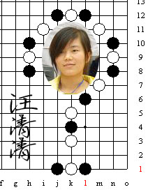
第一届智运会冠军
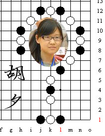
第一届智运会亚军
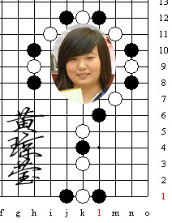
11年全锦赛冠军
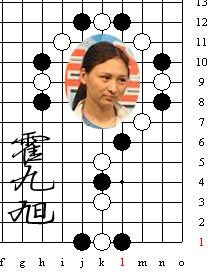
09年全锦赛冠军
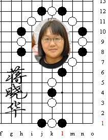
11年全国公开赛冠军
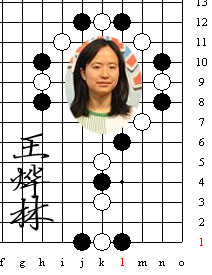
10年全国公开赛亚军
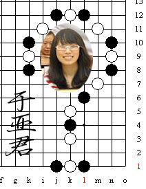
07年全锦赛第四名
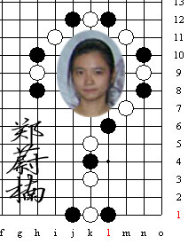
第一届智运会季军
智运会五子棋第二次报名后名单
#2 Re:第二届全智会争雄简析 作者：湮落梓涵 发表时间：2011-11-12 8:15:17
这些照片照得蛮不错的，不少人都笑得很灿烂